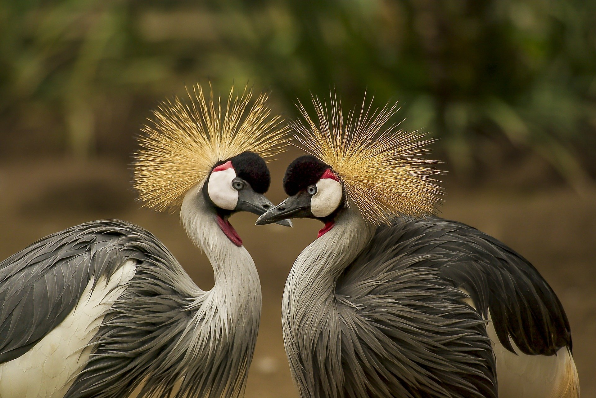

Shoebill Stork
Lives in: Freshwater swamps in tropical Africa
Size: up to 4.5 feet
Wingspan: up to 8.5 feet
Lives in: Freshwater swamps in tropical Africa
Size: up to 4.5 feet
Wingspan: up to 8.5 feet

Bohemian Waxwing
Lives in: Evergreen Forests
Size: Up to 7.5 inches and 2.4 ounces
Wingspan: 13 inches
Lives in: Evergreen Forests
Size: Up to 7.5 inches and 2.4 ounces
Wingspan: 13 inches

Harris Hawk
Live in: Semiopen Desert Lowlands
Size: up to 23 inches and 31 ounces
Wingspan: up to 47 inches
Live in: Semiopen Desert Lowlands
Size: up to 23 inches and 31 ounces
Wingspan: up to 47 inches
Snowy Owl
Lives near: Lakes and the Ocean
Size: up to 28 inches and 104 ounces
Wingspan: up to 57 inches
Lives near: Lakes and the Ocean
Size: up to 28 inches and 104 ounces
Wingspan: up to 57 inches

Northern Cardinal
Lives in: Wooded Areas
Size: up to 9 inches and 1.7 ounces
Wingspan: up to 12 inches
Lives in: Wooded Areas
Size: up to 9 inches and 1.7 ounces
Wingspan: up to 12 inches

Kingfisher
Lives near: Streams, Rivers, Ponds , Lakes and Estuaries
Size: up to 13 inches and 6 ounces
Wingspan: up to almost 23 inches
Lives near: Streams, Rivers, Ponds , Lakes and Estuaries
Size: up to 13 inches and 6 ounces
Wingspan: up to almost 23 inches

Rivoli's Hummingbird
Lives in: Cool Mountain Canyons
Size: up to 5.5 inches and .3 ounces
Wingspan: up to 7 inches
Lives in: Cool Mountain Canyons
Size: up to 5.5 inches and .3 ounces
Wingspan: up to 7 inches

Grey Crowned Cranes
Lives in: Marshes and Grassy Flatlands
Size: up to 3.3 feet tall!
Wingspan: 6.5 feet (as tall as uncle Matt!)
Lives in: Marshes and Grassy Flatlands
Size: up to 3.3 feet tall!
Wingspan: 6.5 feet (as tall as uncle Matt!)

Eastern Whip-Poor-Will
Lives in: Forests with open understories
Size: up to 10 inches and 2.3 ounces
Wingspan: up to 19 inches
Lives in: Forests with open understories
Size: up to 10 inches and 2.3 ounces
Wingspan: up to 19 inches